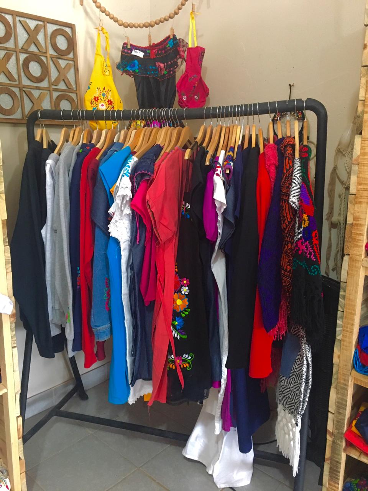
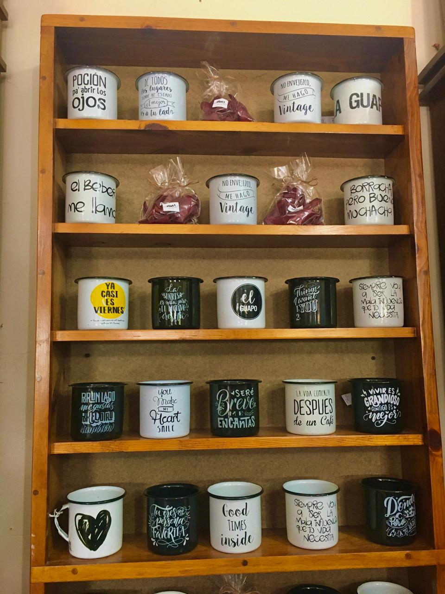
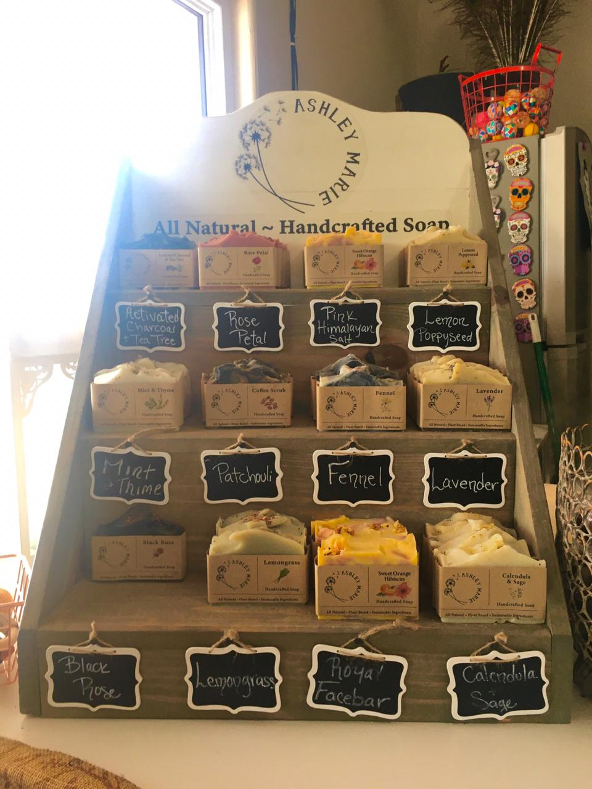
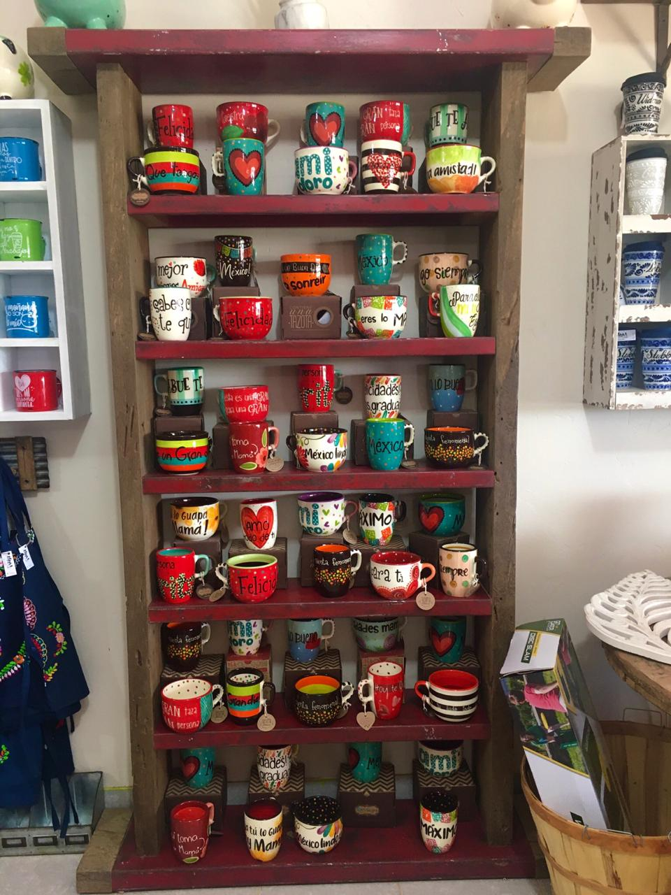
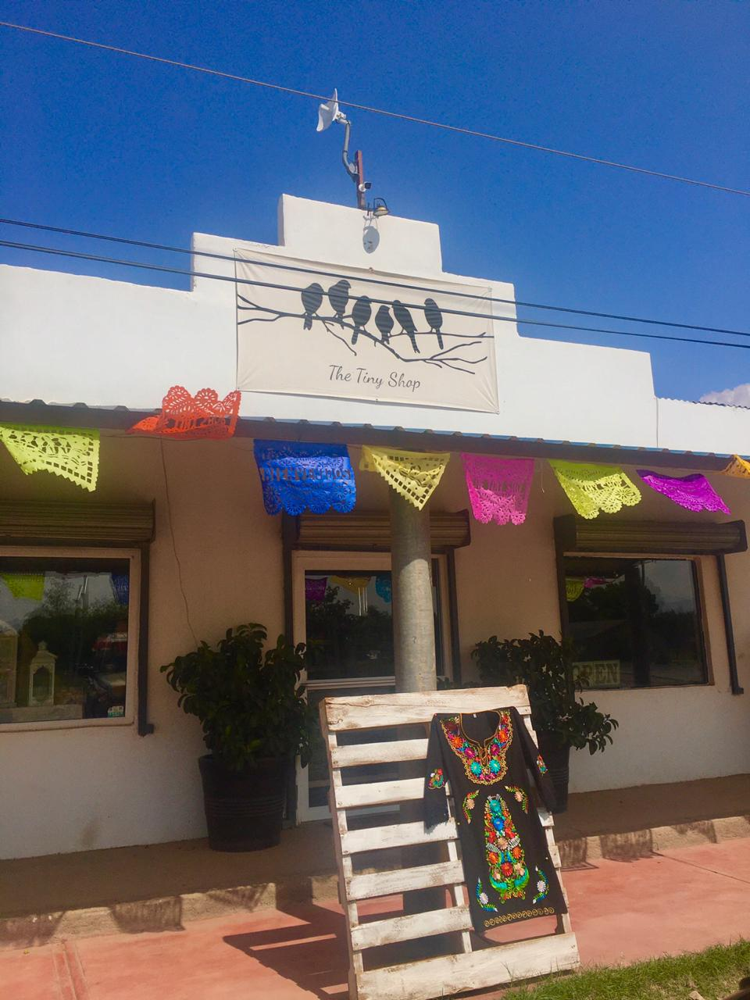

Notas
-Se abre de lunes a viernes de las 10 de la mañana hasta las 7 de la tarde
-Los sabados tambien tienen abierto desde las 10:30 de la mañana hasta las 5 de la tarde
-Lo que más se vende en Tiny shop son los mangos enchilados, tazas para tomar bebidas, jabones naturales
de barra y blusas Mexicanas
-En el mes patrio ( septiembre ) y en diciembre es cuando las ventas se incrementan más
-Solo hay una persona que ayuda con el negocio familiar, se llama Bibiana Domiguez, menciona que el
negocio se distingue por ser diferente y artesanal, una de las características más distinguidas es por
ser un negocio alegre
-Los clientes que más frecuentan ir son adultos
-Quien está a cargo del negocio es Paula Carbajal
-El número con el que se pueden comunicar para hacer un pedido es 623-225-54-91
-También puedes encontrar Tiny Shop en redes sociales como en Instagram y facebook con el nombre del
negocio
-A la dueña le gusta el comercio, las artesanías decorativas de casas las vendían en Galeana ya después
se mudaron en LeBaron y empezaron con el negocio en el 2016 en el mes de mayo son tres personas que
trabajan en el negocio
-Se describe su negocio como un lugar mexicano donde encuentras de todo si no te llevas una cosa te
llevas otra, se venden mucha ropa artesanal vienen muchos turistas ya que en este negocio se cuenta con
diferentes diseños y precios accesibles a las personas
Formato Essay
Lo mejor de México lo encontrarás en Tiny Shop ubicado en Colonia, LeBaron. Un negocio pequeño pero
grande en variedad de productos artesanales para casa, tazas decorativas, ropa de México, mangos
enchilados, jabones naturales y mucho más. Lo encuentras abierto desde las 10 de la mañana hasta las 7
de la tarde de lunes a viernes y los sábados con un horario de 10:30 de la mañana hasta las 5 de la
tarde.
Tiny Shop abrió sus puertas en el 2016 en el mes de mayo. La Paula Carbajal dueña del negocio nos
describe que lleva años que de su vida dedicada al comercio enfocándose en los productos artesanales de
México, nos mencionó que su negocio se distingue por ser Mexicano, entre sus clientes más visitados son
turistas ya que cuenta con diferentes diseños a los que se acostumbra ver y con precios accesibles para
el público, es un lugar donde si no te llevas una cosa te llevas otra.
Para más información contacta Tiny Shop en redes sociales en facebook los encontrarás como The Tiny Shop
y en instagram como Thetinyshop.mex también puedes marcar al numero 001-623-225-54-91.